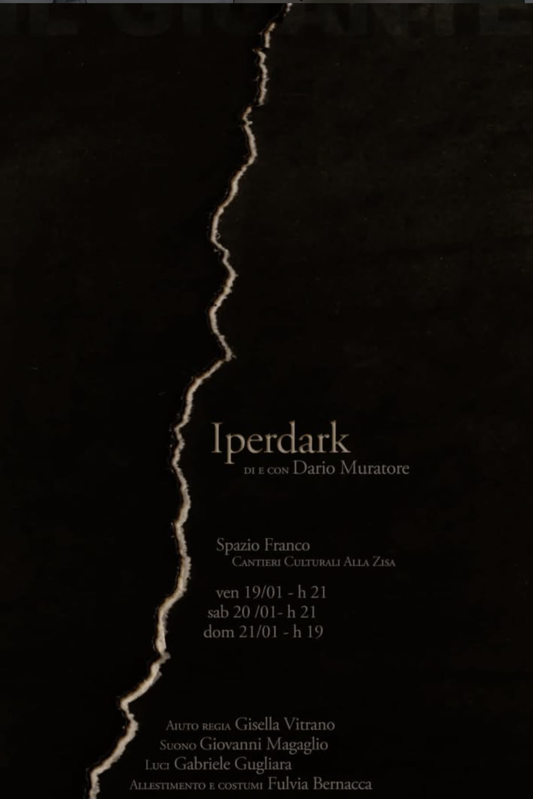

← Tutti i lavori
Iperdark
Iperdark è un viaggio onirico e ironico: il racconto di un risveglio dalla dimenticanza attraverso un atto di nostalgica follia.

Iperdark è un viaggio onirico e ironico: il racconto di un risveglio dalla dimenticanza attraverso un atto di nostalgica follia.
